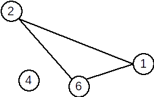

Menu
Definiție. Fie G=(X, U) un graf neorientat. Se numeşte graf parțial al grafului G, graful neorientat G1=(X, U1), unde U1 ⊆ U.
Din definiție rezultă:
- Un graf parțial al unui graf neorientat
G=(V,U), are aceeaşi mulțime de vârfuri ca şiG, iar mulțimea muchiilor este o submulțime a luiUsau chiarU. - Fie
G=(X, U)un graf neorientat. Un graf parțial al grafuluiGse obține păstrând vârfurile şi
eliminând eventual nişte muchii (se pot elimina şi toate muchiile sau chiar nici una).
Definiție. Fie G=(X, U) un graf orientat. Se numeşte subgraf al grafului G graful neorientat G1=(X1,U1) unde X1 ⊆ X iar U1 conține toate arcele din U care au extremitățile în X1.
Din definiție rezultă:
- Fie
G=(X,U)un graf orientat. Un subgraf al grafuluiG, se obține ştergând eventual anumite
vârfuri şi odată cu acestea şi muchiile care le admit ca extremitate (nu se pot şterge toate vârfurile deoarece s-ar obține un graf cu mulțimea vârfurilor vidă).
Definiție. Fie G=(X, U) un graf neorientat. Se numeşte graf complementar al grafului G, graful neorientat G1=(X, U1), cu proprietatea că două vârfuri x și y sunt adiacente în G1 dacă și numai dacă nu sunt adiacente în G.
Exemplu:
| Graful inițial | Graf parțial | Subgraf | Graf complementar |
 |
 |
 | |
S-au eliminat muchiile [1,2], [3,1] |
S-a eliminat vârfurile 3 5 și toate muchiile incidente cu ele. |
O muchie [x,y] apare în graful complementar dacă și numai dacă nu apare în graful inițial. |
Observații. Un graf neorientat oarecare poate avea mai multe grafuri parțiale și subgrafuri, dar un unic graf complementar. Mai precis:
Teoremă: Fie G un graf neorientat cu n vârfuri și m muchii. Atunci:
- graful
Gadmite grafuri parțiale; - graful
Gadmite subgrafuri; - graful
Gadmite un unic graf complementar.
Justificare:
Să ne amintim că o mulțime cu a elemente are submulțimi, inclusiv mulțimea vidă și mulțimea inițială. Atunci:
- orice submulțime a mulțimii muchiilor induce un graf parțial. Sunt
mmuchii, deci submulțimi, deci grafuri parțiale. - orice submulțime a mulțimii vârfuri induce un subgraf, mai puțin mulțimea vidă – un graf nu poate avea
0vârfuri. Similar ca mai sus, sunt subgrafuri. - graful complementar este unic determinat, deoarece complementara unei submulțimi față de o mulțime dată este unic determinată.